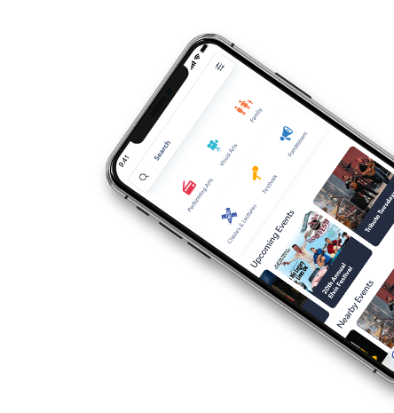
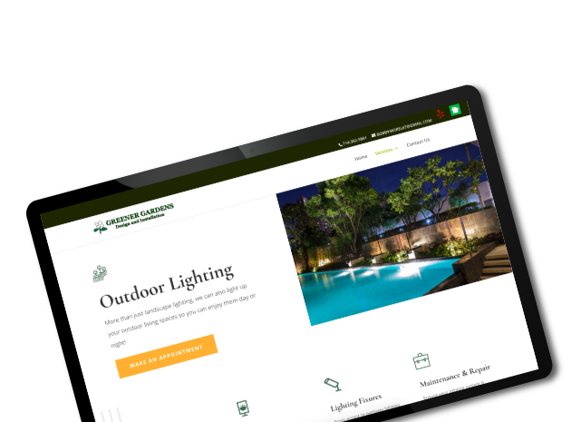

A Creative Digital Agency
Focused on Bringing Brands to Life
UX / UI | Website Development | Marketing Strategy | Branding Design
View Our Work Get In Touch



UX / UI | Website Development | Marketing Strategy | Branding Design
View Our Work Get In Touch